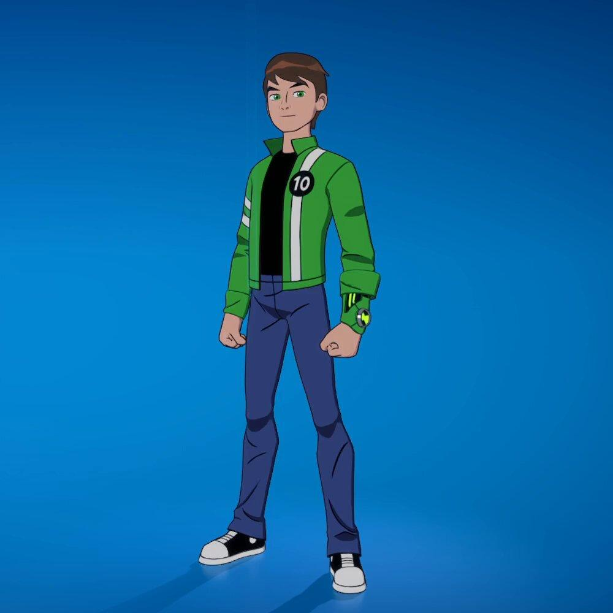
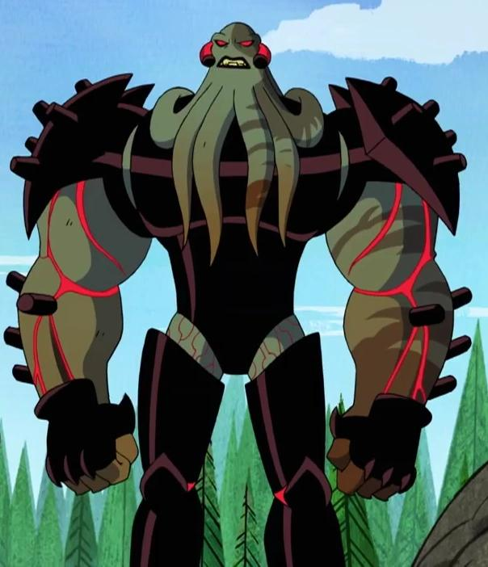

2. Intelligence and Scientific Achievements
Azmuth's intelligence is considered exceptional even among the highly advanced Galvan civilisation. His scientific accomplishments extend across numerous fields, including genetics, engineering, artificial intelligence and advanced energy systems.
- Omnitrix Creation :Designed and constructed the original Omnitrix, allowing its user to transform into different alien species using their genetic information.Genetic Engineering :Developed advanced technology capable of analysing, storing and reproducing the genetic characteristics of numerous extraterrestrial species.Advanced Engineering :Created sophisticated technological systems far beyond the capabilities of most known civilisations.Ultimatrix Technology :Developed technology connected to the Ultimatrix, including its evolutionary simulation capabilities.Artificial Intelligence :Incorporated sophisticated computer systems into his inventions to manage transformations and other complex functions.Galvan Technology :Contributed significantly to the scientific advancement of his species and civilisation.
3. Personality and Characteristics
- Highly Intelligent :Possesses extraordinary analytical and problem-solving abilities.Perfectionist :Expects his inventions and scientific work to meet extremely high standards.Strict and Critical :Frequently criticises Ben when he acts irresponsibly or misuses the Omnitrix.Logical Thinker :Usually approaches problems through scientific reasoning rather than emotion.Proud :Takes considerable pride in his inventions and scientific achievements.Responsible :Understands the consequences of advanced technology and the importance of using it properly.Reluctant Mentor :Although he can be impatient, he occasionally provides Ben with guidance and assistance.
4. Relationship with Ben Tennyson
Azmuth initially views Ben as an inexperienced and irresponsible user of the Omnitrix. He is frequently frustrated by Ben's tendency to treat the device as a source of entertainment rather than recognising its importance.
However, their relationship gradually develops into one of mutual respect. Azmuth recognises Ben's courage, determination and willingness to protect others, while Ben gradually learns to understand the responsibilities associated with possessing the Omnitrix.
Although Azmuth rarely expresses admiration openly, he eventually acknowledges Ben as someone capable of using the Omnitrix for the greater good.
5. Major Inventions
- Omnitrix :Azmuth's most famous invention. It stores genetic information from numerous alien species and allows its user to transform into them.Ultimatrix Technology :Advanced technology associated with the Ultimatrix, including the ability to simulate the evolutionary development of selected alien transformations.Advanced Galvan Technology :Azmuth has developed numerous sophisticated scientific systems, demonstrating his mastery of engineering, genetics and advanced technology.
BEN TEN-The Hero

Attribute Details Full Name Benjamin Kirby Tennyson Common Name Ben Tennyson Species Human Home Planet Earth Occupation Scientist, Inventor and Creator of the Omnitrix First Appearance And Then There Were 10 Affiliation Plumbers Family Gwen Tennyson, Max Tennyson, Ken Tennyson and the Tennyson family Signature Device Omnitrix Main Weapon Alien Transformations Primary Role Protector of Earth and the Universe 1. Overview
Benjamin Kirby Tennyson, commonly known as Ben Tennyson, is the central protagonist of the Ben 10 franchise. He is an ordinary human boy whose life changes dramatically after discovering a mysterious alien device known as the Omnitrix. The device attaches itself to his wrist and grants him the extraordinary ability to transform into numerous alien species, each possessing unique physical characteristics, abilities and powers.
Initially, Ben views the Omnitrix as an exciting opportunity to experience extraordinary adventures and gain incredible abilities. However, as he encounters increasingly dangerous enemies and discovers the true significance of the device, he gradually understands that possessing such power comes with enormous responsibility.
Throughout his adventures, Ben evolves from an impulsive and playful child into a confident, experienced and capable hero. His determination, courage and willingness to protect others establish him as one of the most recognisable young heroes in the animated science-fiction genre.
2. The Omnitrix
The Omnitrix is an advanced extraterrestrial device created by Azmuth, one of the most intelligent scientists in the galaxy. It contains genetic information from numerous alien species and allows its user to transform into different forms.
The Omnitrix is the foundation of Ben's abilities and plays a central role in his adventures.
Its major functions include:
- Alien Transformation :Allows Ben to transform into different extraterrestrial species.Genetic Database :Stores genetic information from numerous alien life forms.DNA Scanning :Can analyse and acquire genetic information from compatible alien species.Transformation Selection :Provides access to different alien transformations through its interface.Genetic Protection :Helps preserve the user's biological integrity during transformations.Communication and Tracking :Certain versions include additional technological functions.Evolutionary Technology :The Ultimatrix introduces an evolutionary simulation feature that allows selected aliens to access more advanced forms.
3. Personality and Characteristics
Ben's personality is an important part of what makes him a distinctive hero. Although his behaviour changes as he grows older, several characteristics remain consistent throughout his journey.
- Courageous :Willingly confronts dangerous enemies to protect innocent people.Confident :Believes in his abilities and is rarely intimidated by powerful opponents.Humorous :Frequently makes jokes and humorous comments, even during difficult situations.Impulsive :Sometimes acts without considering the consequences of his decisions.Determined :Refuses to give up when facing challenging situations.Protective :Cares deeply about his family, friends and the people he protects.Competitive :Enjoys testing his abilities against powerful opponents.Responsible :Gradually learns to understand the importance of using the Omnitrix properly.Resourceful :Often finds creative ways to use his alien transformations to overcome difficult problems.
MAJOR ENEMIES
-
Vilgax-The Conqueror of Worlds

One of Ben's most dangerous and persistent enemies. Vilgax is a powerful alien warlord who repeatedly attempts to obtain the Omnitrix for his own purposes.
Feared throughout the galaxy for his immense strength, ruthless nature and military influence, Vilgax has conquered numerous worlds and established himself as a formidable force.
His primary objective is to acquire the Omnitrix because of its extraordinary ability to access the genetic information of countless alien species. He believes that possessing such technology would make him virtually unstoppable and significantly increase his power.
Vilgax combines tremendous physical strength and durability with advanced weaponry, spacecraft and technological resources.
His repeated encounters with Ben are often driven by his obsession with the Omnitrix, his desire for domination and his refusal to accept defeat. Despite suffering several setbacks, he remains determined to defeat Ben and claim the device.
-
Dr. Animo-The Mad Geneticist

Dr. Aloysius James Animo is a highly intelligent but morally irresponsible scientist who specialises in genetics and biological experimentation.
His obsession with genetic manipulation leads him to develop technologies capable of mutating animals and creating unusual hybrid creatures with extraordinary abilities.
Animo frequently uses these creations to carry out criminal activities, threaten populated areas and challenge Ben.
Despite lacking the physical abilities of many extraterrestrial enemies, his scientific knowledge and unpredictable inventions make him a dangerous opponent.
His primary motivation is recognition, scientific superiority and the desire to prove his intelligence to the world, often disregarding the consequences of his experiments.
-
Zs'Skayr-The Ectonurite Phantom

Zs'Skayr is a powerful Ectonurite and one of the most unusual adversaries in Ben's history. His genetic information was originally stored within the Omnitrix as the basis for the Ghostfreak transformation.
However, unlike ordinary alien DNA samples, Zs'Skayr possesses independent consciousness and eventually escapes the Omnitrix.
He has abilities including intangibility, invisibility, possession and energy manipulation, making him extremely difficult to confront through conventional combat.
His ambition is to spread his influence and establish control over other beings. His connection to the Ghostfreak transformation makes his rivalry with Ben particularly personal, as he represents the danger of the very technology Ben uses to become a hero.
-
Albedo-The Rival Galvan

Albedo is a highly intelligent Galvan scientist who originally worked alongside Azmuth. His attempt to create a personal version of the Omnitrix results in an unstable transformation that causes him to resemble Ben Tennyson.
This incident establishes a deep rivalry between the two, as Albedo blames Ben for the consequences of his condition and repeatedly attempts to obtain the original Omnitrix or reverse his transformation.
Possessing scientific intelligence comparable to other highly advanced Galvans, Albedo is capable of designing sophisticated technological devices and creating dangerous inventions.
His knowledge of the Omnitrix also allows him to understand Ben's transformations and weaknesses in considerable detail.
Unlike Vilgax, whose ambitions centre on conquest, Albedo's conflict with Ben is largely driven by resentment, pride and his desire to restore his original identity.